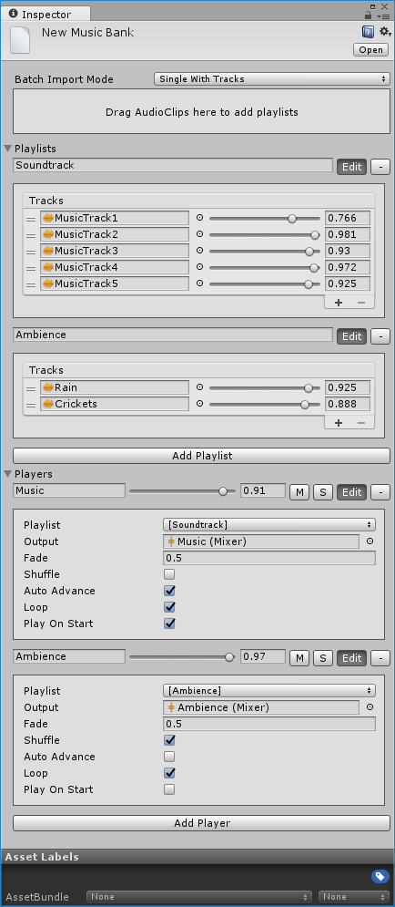

Music Bank
Description
Music bank is a collection of playlists and music players. It's stored inside the project Assets folder. Once filled with the content, it's ready to use in the code.
It's possible to have several music banks. Stem will automatically search for the corresponding music bank during the playlist or music player lookup. In the case of name collisions, if multiple banks have music players or playlists with the same name, primary music bank (which you can only set in the code) will be checked first. Within a bank, the first occurrence of music player or playlist will be used.
All music tracks must be organized into playlists. It could be thematic playlists, i.e. gameplay music, menu music, outdoor ambience, etc. or big single playlist containing all the tracks.
Each music player can only play a single playlist. Music bank allows doing a layered music playback by creating multiple music players and filling them with different playlists.

Properties
| Property | Description |
|---|---|
| Playlists | A collection of playlists. |
| Players | A collection of music players. |